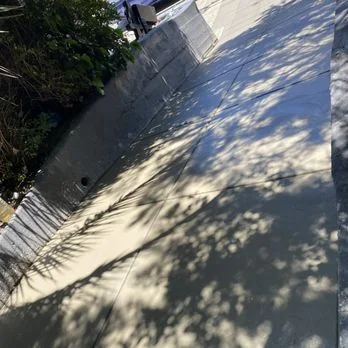
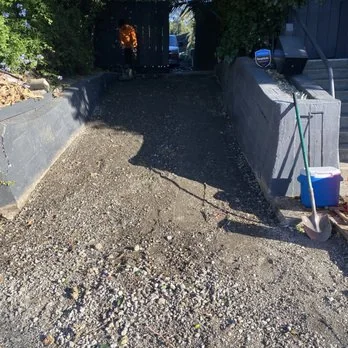
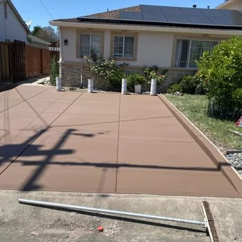
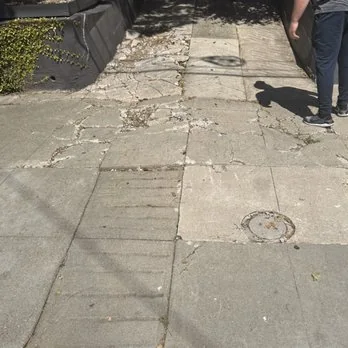

PROCESS STUDY 01
DRAG TO EXPLOREConcrete transformation
From a rough prepared surface to a smooth concrete finish.
Explore photos of outdoor projects, from concrete driveways and pathways to fences and finished landscapes.
Take a closer look at the textures, details, and transformations behind these outdoor projects. Select a category or open any photograph for a full-screen view.
Explore preparation and finished-work examples. These photographs have not been verified as matching before-and-after views of the exact same site.


From a rough prepared surface to a smooth concrete finish.


Compare deteriorated concrete with a decorative finished surface.
Real photographs supplied for Crisostomo Landscaping.
No photographs in this category yet.
Talk to Crisostomo Landscaping about your space.
Call (925) 408-2920Request an Estimate